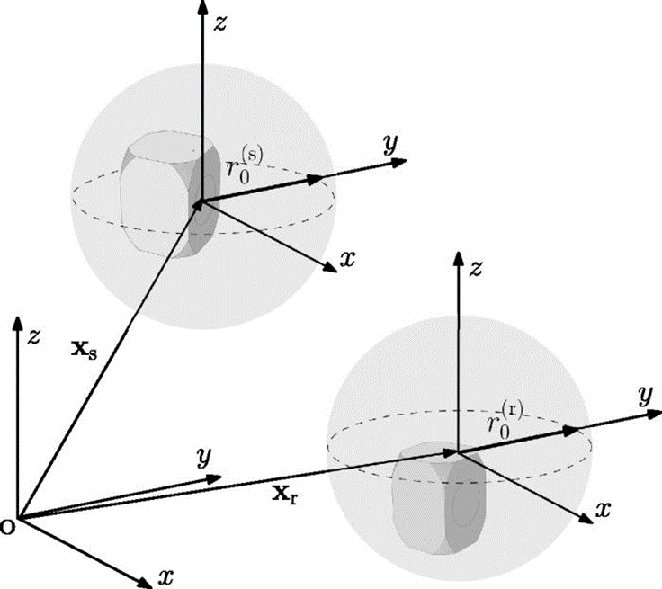

Introduction
Overview
The Diffraction Enhanced Image Source Method (DEISM) is a Python package for room-acoustics simulation with directivity-aware source and receiver models. It supports both classic shoebox rooms and convex-room DEISM-ARG workflows.
The package models the transfer function or impulse response between transducers mounted on one or two devices while incorporating local diffraction and scattering effects through spherical-harmonic directivity coefficients.
{kind=link}

Overview of the DEISM method. Source and receiver transducers are mounted on speakers. Local diffraction effects around the transducers are captured using spherical-harmonic directivity coefficients.
Key Features
DEISM provides the following capabilities:
Arbitrary directivities: source and receiver directivity data can come from analytic models, simulations, or measurements.
Angle-dependent reflections: wall impedance can vary by wall and by frequency.
Two execution modes: frequency-domain transfer functions (RTF) and time-domain impulse-response workflows (RIR).
Multiple room types: shoebox workflows and convex-room DEISM-ARG workflows.
Accelerated execution: Numba is the default computation backend; Ray is retained as a legacy backend.
Current documentation focus
The documentation is centered on the current class-based workflow:
Instantiate
DEISM(mode, roomtype).Update geometry, materials, and frequency state.
Update source/receiver geometry and directivities.
Run the simulation and inspect
params["RTF"].
Applications
DEISM (and DEISM-ARG) is particularly useful for:
Smart-speaker modeling with enclosure-dependent directivity
Human-head and listener modeling
Custom transducer devices with measured or simulated directivities
Research workflows that compare shoebox and convex-room image-source methods
For more details on the theoretical background, see our Academic publications.
Academic publications
If you use this package in your research, please cite the following papers:
- Main Paper
Zeyu Xu, Adrian Herzog, Alexander Lodermeyer, Emanuel A. P. Habets, Albert G. Prinn; “Simulating room transfer functions between transducers mounted on audio devices using a modified image source method.” J. Acoust. Soc. Am. 155 (1): 343-357 (2024). DOI: 10.1121/10.0023935
- Directivity Formulation
Zeyu Xu, Adrian Herzog, Alexander Lodermeyer, Emanuel A. P. Habets, Albert G. Prinn; “Acoustic reciprocity in the spherical harmonic domain: A formulation for directional sources and receivers.” JASA Express Lett. 2 (12): 124801 (2022). DOI: 10.1121/10.0016542
- Arbitrary Geometries
Z. Xu, E. A. P. Habets and A. G. Prinn; “Simulating sound fields in rooms with arbitrary geometries using the diffraction-enhanced image source method,” Proc. International Workshop on Acoustic Signal Enhancement (IWAENC), 2024.